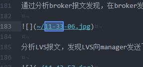

1. 服务订购失败，查询broker日志，报错信息为：¶
1 2 3 4 5 6 7 8 9 10 11 12 13 14 15 16 17 18 19 20 21 22 23 24 25 26 27 28 29 30 31 32 | 06-29 07:29:53,747 INFO (vert.x-worker-thread-0) Submit create instance request: uri=https://10.186.86.79:8443/fst/rest/v1.0/d387a958e8f04967a501530872c8462e/instances, body={"instance":{"project_id":"d387a
958e8f04967a501530872c8462e","organization_guid":"ddmtest","space_guid":"bilibili","plan_name":"default","service_guid":"790b1219-9fb5-935c-f2bb-0e6ae9139594","service_name":"ddm-serviceddddd","instance_id"
:null,"instance_name":"dddddd","parameters":{"ams_ip":"10.186.144.34","console_address":"10.186.86.79:7443","ddm_core_package":"https://10.186.144.34:20202/swr/v2/domains/paas-ddmtest/namespaces/ddm-namespa
ce/repositories/ddm-ware/packages/ddm-pkg/versions/1.0.0.B005/file_paths/DDM-CORE-AOS-1.0.0.B006.zip","manager_address":"10.186.86.79:8443","pod_etcd01":"10.162.249.97","pod_etcd02":"10.186.99.212","pod_etc
d03":"10.162.233.92"},"accepts_incomplete":true,"blueprint_id":"217326bf-e600-72f1-5669-e2e35a622eea","dependInfo":[],"organization_id":"989ad1d82c6c4530b1b1369c0536e05c","user_guid":"ddmtest","cluster_id":
"11111111-1111-1111-1111-111111111111","cluster_name":null,"cluster_namespace":"bilibili"}} (DdmManagerHttpClient:38)
06-29 07:29:56,283 INFO (vert.x-eventloop-thread-4) getServiceCatalog uri is /v2/catalog (BrokerRestResource:61)
06-29 07:30:04,915 ERROR(vert.x-eventloop-thread-0) requestAsyn error,
Exception: javax.net.ssl.SSLHandshakeException; Failed to create SSL connection
javax.net.ssl.SSLHandshakeException: Failed to create SSL connection
at io.vertx.core.http.impl.ConnectionManager$ConnQueue.handshakeFailure(ConnectionManager.java:316)
at io.vertx.core.http.impl.ConnectionManager$ConnQueue.access$1700(ConnectionManager.java:186)
at io.vertx.core.http.impl.ConnectionManager$ChannelConnector.lambda$null$1(ConnectionManager.java:502)
at io.netty.util.concurrent.DefaultPromise.notifyListener0(DefaultPromise.java:514)
at io.netty.util.concurrent.DefaultPromise.notifyListeners0(DefaultPromise.java:507)
at io.netty.util.concurrent.DefaultPromise.notifyListenersNow(DefaultPromise.java:486)
at io.netty.util.concurrent.DefaultPromise.notifyListeners(DefaultPromise.java:427)
at io.netty.util.concurrent.DefaultPromise.tryFailure(DefaultPromise.java:129)
at io.netty.handler.ssl.SslHandler.notifyHandshakeFailure(SslHandler.java:1235)
at io.netty.handler.ssl.SslHandler.access$700(SslHandler.java:160)
at io.netty.handler.ssl.SslHandler$5.run(SslHandler.java:1379)
at io.netty.util.concurrent.PromiseTask$RunnableAdapter.call(PromiseTask.java:38)
at io.netty.util.concurrent.ScheduledFutureTask.run(ScheduledFutureTask.java:120)
at io.netty.util.concurrent.AbstractEventExecutor.safeExecute(AbstractEventExecutor.java:163)
at io.netty.util.concurrent.SingleThreadEventExecutor.runAllTasks(SingleThreadEventExecutor.java:418)
at io.netty.channel.nio.NioEventLoop.run(NioEventLoop.java:440)
at io.netty.util.concurrent.SingleThreadEventExecutor$5.run(SingleThreadEventExecutor.java:873)
at java.lang.Thread.run(Thread.java:748)
Caused by: javax.net.ssl.SSLException: handshake timed out
at io.netty.handler.ssl.SslHandler.handshake(...)(Unknown Source)
(VertxHttpClientUtils:70)
06-29 07:30:04,919 ERROR(vert.x-worker-thread-0) Create instance request failed: non-response (DdmManagerHttpClient:53)
|
从报错信息得知，broker在发起https请求时，与manager 建立SSL连接超时 。
2. 测试网络连接和manager服务¶
- 测试broker与manager：
curl -kv https://10.162.61.211:8443，连接正常。 - 测试broker与LVS：
curl -kv https://10.186.86.79:8443，连接失败。此为 疑问点1 。
1 2 3 4 5 6 7 | * Trying 10.186.86.79... * Connected to 10.186.86.79 (10.186.86.79) port 8443 (#0) * Initializing NSS with certpath: sql:/etc/pki/nssdb * NSS error -5961 (PR_CONNECT_RESET_ERROR) * TCP connection reset by peer * Closing connection 0 curl: (35) TCP connection reset |
3. 查询keepalived进程，正常：¶
1 2 3 4 5 | [root@szvphicpra57487 ~]# ps -ef | grep keepalived paas 70663 1 0 6月29 ? 00:00:02 /usr/sbin/keepalived -D -f /etc/keepalived/keepalived.conf -p /etc/keepalived/run/keepalived.pid -r /etc/keepalived/run/vrrp.pid -c /etc/keepalived/run/checkers.pid paas 70668 70663 0 6月29 ? 00:00:14 /usr/sbin/keepalived -D -f /etc/keepalived/keepalived.conf -p /etc/keepalived/run/keepalived.pid -r /etc/keepalived/run/vrrp.pid -c /etc/keepalived/run/checkers.pid paas 70669 70663 0 6月29 ? 00:00:14 /usr/sbin/keepalived -D -f /etc/keepalived/keepalived.conf -p /etc/keepalived/run/keepalived.pid -r /etc/keepalived/run/vrrp.pid -c /etc/keepalived/run/checkers.pid root 104754 104025 0 10:57 pts/0 00:00:00 grep --color=auto keepalived |
4. 查询VIP绑定情况，正常：¶
1 2 3 4 5 6 7 8 9 10 11 12 13 14 15 | [root@szvphicpra57487 ~]# ip a 1: lo: <LOOPBACK,UP,LOWER_UP> mtu 65536 qdisc noqueue state UNKNOWN link/loopback 00:00:00:00:00:00 brd 00:00:00:00:00:00 inet 127.0.0.1/8 scope host lo valid_lft forever preferred_lft forever inet6 ::1/128 scope host valid_lft forever preferred_lft forever 2: eth0: <BROADCAST,MULTICAST,UP,LOWER_UP> mtu 1500 qdisc pfifo_fast state UP qlen 1000 link/ether 28:6e:d4:89:1a:d4 brd ff:ff:ff:ff:ff:ff inet 10.186.87.105/23 brd 10.186.87.255 scope global eth0 valid_lft forever preferred_lft forever inet 10.186.86.79/32 scope global eth0 valid_lft forever preferred_lft forever inet6 fe80::2a6e:d4ff:fe89:1ad4/64 scope link valid_lft forever preferred_lft forever |
5. 查询LVS转发：¶
1 2 3 4 5 6 7 8 9 | [root@szvphicpra57487 ~]# ipvsadm -L -n --stats IP Virtual Server version 1.2.1 (size=4194304) Prot LocalAddress:Port Conns InPkts OutPkts InBytes OutBytes -> RemoteAddress:Port TCP 10.186.86.79:7443 29 1611 0 137797 0 -> 10.186.99.175:7443 27 1586 0 135331 0 -> 10.186.127.176:7443 2 25 0 2466 0 TCP 10.186.86.79:8443 6 72 0 16952 0 -> 10.162.61.211:8443 6 72 0 16952 0 |
发现 只有输入的包，没有输出的包，此为 疑问点2 。
6. 在LVS节点上查询防火墙信息，未发现异常：¶
1 2 3 4 5 6 7 8 9 10 11 12 13 14 15 16 17 18 19 20 21 22 23 24 25 26 27 28 29 30 31 32 33 34 35 36 37 38 39 40 41 42 43 44 45 46 47 48 | [root@szvphicpra57487 ~]# iptables -L -n -v Chain INPUT (policy ACCEPT 47 packets, 11299 bytes) pkts bytes target prot opt in out source destination 4462K 2468M KUBE-FIREWALL all -- * * 0.0.0.0/0 0.0.0.0/0 0 0 ACCEPT udp -- * * 0.0.0.0/0 0.0.0.0/0 udp dpt:49537 0 0 ACCEPT tcp -- * * 0.0.0.0/0 0.0.0.0/0 tcp dpt:49537 0 0 ACCEPT udp -- * * 0.0.0.0/0 0.0.0.0/0 udp dpt:60129 Chain FORWARD (policy ACCEPT 0 packets, 0 bytes) pkts bytes target prot opt in out source destination 1 48 CANAL-ISOLATION all -- * * 0.0.0.0/0 0.0.0.0/0 /* default/canal-service */ 1 48 DOCKER-ISOLATION all -- * * 0.0.0.0/0 0.0.0.0/0 0 0 DOCKER all -- * docker0 0.0.0.0/0 0.0.0.0/0 0 0 ACCEPT all -- * docker0 0.0.0.0/0 0.0.0.0/0 ctstate RELATED,ESTABLISHED 0 0 ACCEPT all -- docker0 !docker0 0.0.0.0/0 0.0.0.0/0 0 0 ACCEPT all -- docker0 docker0 0.0.0.0/0 0.0.0.0/0 Chain OUTPUT (policy ACCEPT 43 packets, 4868 bytes) pkts bytes target prot opt in out source destination 3632K 827M KUBE-FIREWALL all -- * * 0.0.0.0/0 0.0.0.0/0 3632K 827M KUBE-SERVICES all -- * * 0.0.0.0/0 0.0.0.0/0 /* kubernetes service portals */ Chain CANAL-ISOLATION (1 references) pkts bytes target prot opt in out source destination 0 0 CANAL-ISOLATION_7505d64a all -- gw_7505d64a * 0.0.0.0/0 0.0.0.0/0 0 0 ACCEPT all -- * gw_7505d64a 0.0.0.0/0 0.0.0.0/0 ctstate RELATED,ESTABLISHED Chain CANAL-ISOLATION_7505d64a (1 references) pkts bytes target prot opt in out source destination 0 0 ACCEPT all -- * gw_7505d64a 0.0.0.0/0 0.0.0.0/0 0 0 ACCEPT all -- * eth0 0.0.0.0/0 0.0.0.0/0 0 0 ACCEPT all -- * * 0.0.0.0/0 0.0.0.0/0 Chain DOCKER (1 references) pkts bytes target prot opt in out source destination Chain DOCKER-ISOLATION (1 references) pkts bytes target prot opt in out source destination 1 48 RETURN all -- * * 0.0.0.0/0 0.0.0.0/0 Chain KUBE-FIREWALL (2 references) pkts bytes target prot opt in out source destination 0 0 DROP all -- * * 0.0.0.0/0 0.0.0.0/0 /* kubernetes firewall for dropping marked packets */ mark match 0x8000/0x8000 Chain KUBE-SERVICES (1 references) pkts bytes target prot opt in out source destination 0 0 REJECT tcp -- * * 0.0.0.0/0 10.247.37.237 /* kube-system/ingress-controller:ingress-controller-secure has no endpoints */ tcp dpt:30280 reject-with icmp-port-unreachable 0 0 REJECT tcp -- * * 0.0.0.0/0 10.247.37.237 /* kube-system/ingress-controller:ingress-controller-insecure has no endpoints */ tcp dpt:30281 reject-with icmp-port-unreachable |
7. 抓包查看报文转发情况¶
1. 安装tcpdump¶
安装包已分享至OneBox：https://onebox.huawei.com/p/59c49f09d1cda4a34294dd23e08811da
- 使用工具如WinSCP将
libpcap0-0.9.8-50.10.1.x86_64.rpm和tcpdump-3.9.8-1.21.x86_64.rpm两个安装包拷贝到需要抓包的VM上； - 修改文件执行权限
chmod 777 libpcap0-0.9.8-50.10.1.x86_64.rpm和chmod 777 tcpdump-3.9.8-1.21.x86_64.rpm； - 执行安装
rpm -hvi libpcap0-0.9.8-50.10.1.x86_64.rpm和rpm -hvi tcpdump-3.9.8-1.21.x86_64.rpm；
2. 执行抓包程序¶
1 | tcpdump -v -n -i eth0 -w /opt/tmp.cap -s 0 #-i为网络接口名称，-w为输出文件路径 |
3. 抓包分析¶
- 使用
Ctrl + C停止抓包，并将抓包文件使用WinSCP拷贝回Windows机器上，使用WireShark进行分析，安装包已分享至OneBox：https://onebox.huawei.com/p/711f01fe1344b866d2c7d5ec152ff5d3 - 使用过滤条件进行报文过滤：
tcp && ((ip.src == 10.186.127.176 && ip.dst == 10.162.61.211) || (ip.src == 10.162.61.211 && ip.dst == 10.186.127.176))
通过分析broker报文发现，在broker发送了PSH1推送报文后，就一直在重传， 没有得到manager的响应 ，此为 疑问点3 。

分析LVS报文，发现LVS向manager发送了RST1报文。

查阅资料得知，这是keepalived的健康检查机制，LVS会定期（默认6秒，可以修改keepalived.conf中字段delay_loop 6）向manager发送一个TCP连接来检测http是否正常，为了减少TCP连接带来的资源浪费，所以检测（TCP三次握手2）完毕后会发送一个RST报文来断开这个连接，释放资源。因此该报文为正常报文，且未接收到LVS发送的请求报文。
尝试不使用LVS，broker直连manager，订购成功。

在broker向manager发送了PSH报文后，manager向broker返回PSH应答报文。
综合报文分析，原因仍是出在LVS。
8. 查看keepalived配置¶
1 2 3 4 5 6 7 8 9 10 11 12 13 14 15 16 17 18 19 20 21 22 23 24 25 26 27 28 29 30 31 32 33 34 35 36 37 38 39 40 41 42 43 44 45 46 47 48 49 50 51 52 53 54 55 56 57 58 59 60 61 62 63 64 65 66 67 68 69 70 71 72 73 74 75 76 77 78 79 80 81 82 83 | cat /etc/keepalived/keepalived.conf global_defs { router_id DDM_LVS_205 } local_address_group laddr_g1 { 10.186.87.105 } vrrp_instance VI_1 { state MASTER interface eth0 virtual_router_id 51 priority 205 advert_int 1 nopreempt authentication { auth_type PASS auth_pass 1111 } virtual_ipaddress { 10.186.86.79 } } virtual_server 10.186.86.79 7443 { delay_loop 6 lb_algo rr lb_kind FNAT persistence_timeout 50 protocol TCP syn_proxy laddr_group_name laddr_g1 real_server 10.186.99.175 7443 { weight 1 TCP_CHECK { connect_timeout 8 nb_get_retry 3 delay_before_retry 3 connect_port 7443 } } real_server 10.186.127.176 7443 { weight 1 TCP_CHECK { connect_timeout 8 nb_get_retry 3 delay_before_retry 3 connect_port 7443 } } } virtual_server 10.186.86.79 8443 { delay_loop 6 lb_algo rr lb_kind FNAT persistence_timeout 50 protocol TCP laddr_group_name laddr_g1 real_server 10.162.217.81 8443 { weight 1 TCP_CHECK { connect_timeout 8 nb_get_retry 3 delay_before_retry 3 connect_port 8443 } } real_server 10.162.61.211 8443 { weight 1 TCP_CHECK { connect_timeout 8 nb_get_retry 3 delay_before_retry 3 connect_port 8443 } } } |
发现local_address_group laddr_g1中的IP非本机IP，而是另一个LVS的IP。再查看堆栈部署参数，发现lvs_node1参数填写的是节点标签为ddm_lvs2的地址，而lvs_node2参数填写的是节点标签为ddm_lvs1的地址。
问题明确，手动修改keepalived.conf，将IP修改正确，重启keepalived服务，问题解决。
问题原因比较简单，但以此文来说明LVS问题定位思路。
END
（续）主备倒换后，网络又不通¶
查看ipvsadm -ln --stats，发现发送和接收包全零。
查看iptables -t raw -L -nv，发现是因为误执行了iptables -t raw -I PREROUTING -d $lvs_floating_ip -j DROP，增加了一条备节点的防火墙规则，而在主备倒换的时候未删除导致。
执行iptables -t raw -L -nv --line-numbers，查看规则行号，如1。
执行iptables -t raw -D PREROUTING 1，删除该规则，问题解决。
END